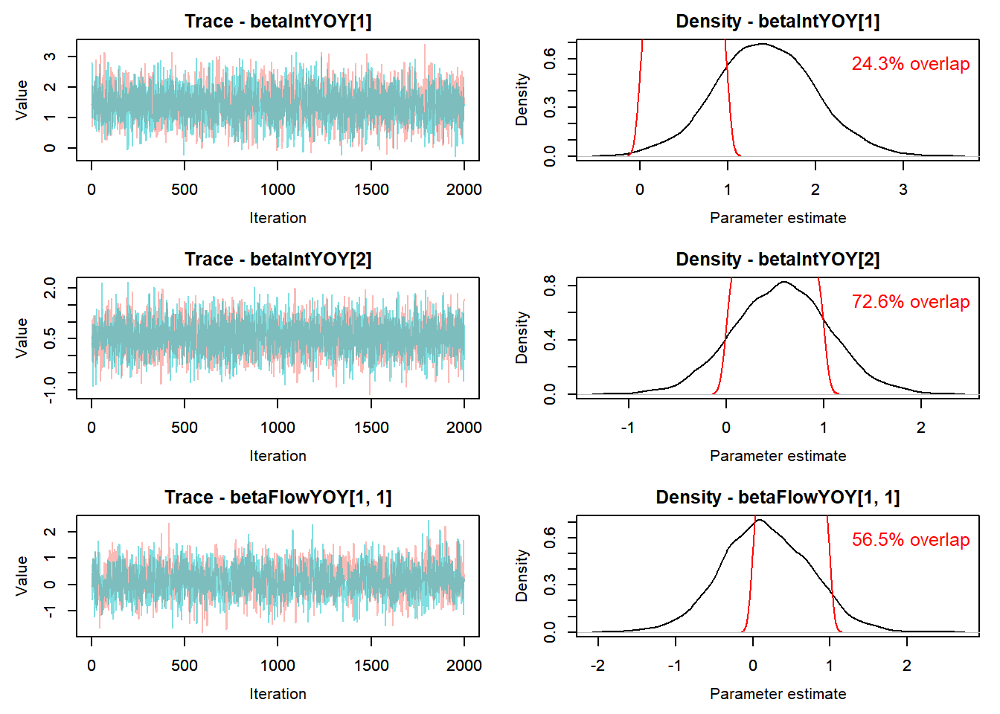
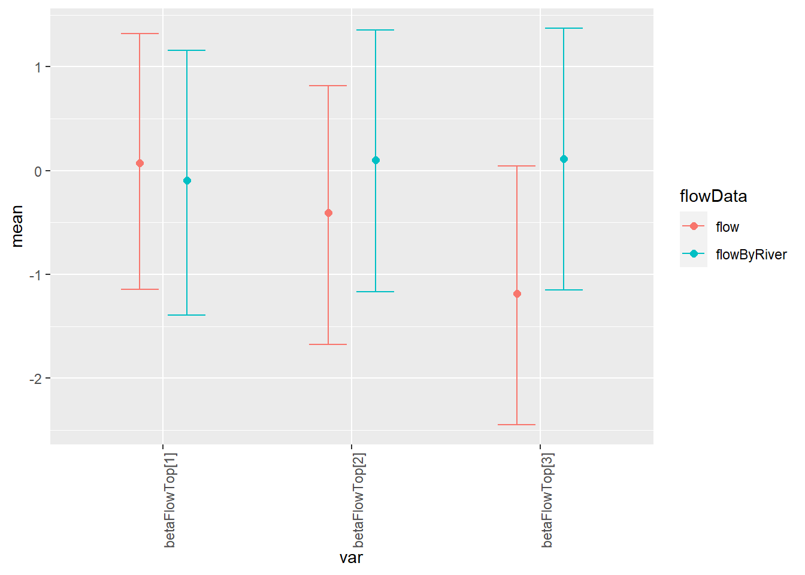

12 Flow effects on survival (phi) models with cohort structure - O’Bear only
Phi model structure:
logit(phi[t,i]) <-
betaInt[ isYOY[i,t],season[t],cohort[i]] +
betaFlow[1,isYOY[i,t],season[t]] * flow[i,t] +
betaFlow[2,isYOY[i,t],season[t]] * temp[i,t] +
betaFlow[3,isYOY[i,t],season[t]] * temp[i,t] * flow[i,t]
logit(p[t,i]) <- betaP[isYOY[i,t],season[t-1],cohort[i]]
The goal of this modelling exercise is to evaluate the effect of new tributary-specific stream flow estimates on survival of brook trout and brown trout. We will compare survival across the WB and tributaries with flow input data as 1) single flow estimate for all locations (historical approach) and 2) hindcasted flows for each tributary based on new tributary-specific flows which are available since 2000.
The goal is to find the best structure for the survival model, then compare survival estimates with tributary-specific flow to estimates with common flow across locations.
Structure options include [species, cohort, season, isYOY, flow, flow^2]
12.0.1 Model phiT_pT flow (tt_OB_flow)
Cohort-dependent estimates of phi and p with flow and temperature hierarchical effects
12.0.1.1 Retrieve model results
Model is run using targets in R/modelCMR_tt_ft_cohort_OB.R
Code
# Following https://oliviergimenez.github.io/bayesian-cr-workshop/worksheets/4_demo.html
#
out_flow <- tar_read(tt_modelOut_ft_cohort_OB_flow )
MCMCplot(object = out_flow$mcmc)
Code
summary_flow <- MCMCsummary(object = out_flow$mcmc, round = 3) %>%
mutate(flowData = "flow") %>%
rownames_to_column(var = "var")
summary_flow %>% filter(grepl("betaIntYOYSeason", var)) var mean sd 2.5% 50% 97.5% Rhat n.eff
1 betaIntYOYSeason[1, 1] 0.804 0.394 0.065 0.798 1.619 1.00 900
2 betaIntYOYSeason[2, 1] -0.381 0.447 -1.257 -0.399 0.521 1.02 661
3 betaIntYOYSeason[1, 2] 1.413 1.139 -0.867 1.405 3.646 1.00 4000
4 betaIntYOYSeason[2, 2] -0.031 0.307 -0.638 -0.037 0.566 1.00 2559
5 betaIntYOYSeason[1, 3] 1.789 0.426 1.036 1.761 2.694 1.01 471
6 betaIntYOYSeason[2, 3] 1.014 0.343 0.338 1.010 1.693 1.00 1323
7 betaIntYOYSeason[1, 4] 2.442 0.529 1.531 2.398 3.615 1.01 329
8 betaIntYOYSeason[2, 4] 1.561 0.500 0.717 1.516 2.690 1.04 400
9 betaIntYOYSeasonOut[1, 1] 0.685 0.082 0.516 0.690 0.835 1.00 932
10 betaIntYOYSeasonOut[2, 1] 0.410 0.104 0.221 0.402 0.627 1.01 704
11 betaIntYOYSeasonOut[1, 2] 0.757 0.181 0.296 0.803 0.975 1.00 3699
12 betaIntYOYSeasonOut[2, 2] 0.492 0.075 0.346 0.491 0.638 1.00 2559
13 betaIntYOYSeasonOut[1, 3] 0.849 0.052 0.738 0.853 0.937 1.01 522
14 betaIntYOYSeasonOut[2, 3] 0.729 0.066 0.584 0.733 0.845 1.00 1319
15 betaIntYOYSeasonOut[1, 4] 0.912 0.039 0.822 0.917 0.974 1.02 421
16 betaIntYOYSeasonOut[2, 4] 0.816 0.068 0.672 0.820 0.936 1.02 497
flowData
1 flow
2 flow
3 flow
4 flow
5 flow
6 flow
7 flow
8 flow
9 flow
10 flow
11 flow
12 flow
13 flow
14 flow
15 flow
16 flowCode
summary_flow %>% filter(grepl("betaPhiYOYSeason", var))[1] var mean sd 2.5% 50% 97.5% Rhat n.eff
[9] flowData
<0 rows> (or 0-length row.names)Code
summary_flow %>% filter(grepl("betaFlow", var)) var mean sd 2.5% 50% 97.5% Rhat n.eff flowData
1 betaFlow[1, 1, 1] 0.234 0.506 -0.806 0.249 1.189 1.00 422 flow
2 betaFlow[2, 1, 1] -1.321 0.381 -2.033 -1.332 -0.559 1.00 173 flow
3 betaFlow[3, 1, 1] -5.163 0.784 -6.710 -5.155 -3.633 1.01 268 flow
4 betaFlow[1, 2, 1] -1.031 0.284 -1.587 -1.025 -0.470 1.00 601 flow
5 betaFlow[2, 2, 1] -2.129 0.372 -2.859 -2.132 -1.402 1.00 422 flow
6 betaFlow[3, 2, 1] -2.803 0.495 -3.784 -2.782 -1.899 1.01 411 flow
7 betaFlow[1, 1, 2] 0.177 1.138 -2.061 0.179 2.440 1.00 2572 flow
8 betaFlow[2, 1, 2] -0.527 1.164 -2.789 -0.534 1.789 1.00 3347 flow
9 betaFlow[3, 1, 2] -2.028 1.155 -4.230 -2.006 0.249 1.00 2042 flow
10 betaFlow[1, 2, 2] -0.318 0.103 -0.517 -0.318 -0.115 1.00 805 flow
11 betaFlow[2, 2, 2] -0.857 0.150 -1.146 -0.856 -0.562 1.01 535 flow
12 betaFlow[3, 2, 2] -0.153 0.165 -0.493 -0.151 0.157 1.01 719 flow
13 betaFlow[1, 1, 3] 0.647 0.458 -0.156 0.605 1.646 1.10 220 flow
14 betaFlow[2, 1, 3] -0.305 0.425 -1.299 -0.276 0.415 1.00 387 flow
15 betaFlow[3, 1, 3] -0.956 0.519 -2.129 -0.886 -0.104 1.04 327 flow
16 betaFlow[1, 2, 3] 1.701 0.320 1.046 1.709 2.312 1.04 176 flow
17 betaFlow[2, 2, 3] -0.348 0.181 -0.693 -0.346 0.010 1.01 579 flow
18 betaFlow[3, 2, 3] -2.124 0.380 -2.817 -2.135 -1.317 1.02 244 flow
19 betaFlow[1, 1, 4] -0.289 0.421 -1.088 -0.305 0.592 1.04 283 flow
20 betaFlow[2, 1, 4] -0.167 0.484 -1.113 -0.178 0.818 1.02 277 flow
21 betaFlow[3, 1, 4] -0.811 0.400 -1.661 -0.798 -0.059 1.00 291 flow
22 betaFlow[1, 2, 4] -0.373 0.322 -1.018 -0.372 0.254 1.02 487 flow
23 betaFlow[2, 2, 4] 0.390 0.471 -0.590 0.410 1.318 1.04 185 flow
24 betaFlow[3, 2, 4] -1.248 0.384 -2.005 -1.245 -0.483 1.02 208 flow
25 betaFlowTop[1] 0.076 0.633 -1.144 0.076 1.317 1.00 3304 flow
26 betaFlowTop[2] -0.408 0.634 -1.676 -0.406 0.819 1.00 3722 flow
27 betaFlowTop[3] -1.186 0.639 -2.449 -1.189 0.046 1.00 3403 flow
28 betaFlowYOY[1, 1] 0.168 0.570 -0.939 0.148 1.298 1.01 1328 flow
29 betaFlowYOY[2, 1] -0.530 0.566 -1.637 -0.532 0.584 1.00 1402 flow
30 betaFlowYOY[3, 1] -2.020 0.607 -3.193 -2.016 -0.846 1.01 684 flow
31 betaFlowYOY[1, 2] 0.011 0.485 -0.916 0.009 0.953 1.00 3179 flow
32 betaFlowYOY[2, 2] -0.678 0.490 -1.643 -0.669 0.262 1.00 2204 flow
33 betaFlowYOY[3, 2] -1.498 0.497 -2.446 -1.505 -0.524 1.00 2381 flowCode
summary_flow %>% filter(grepl("betaInt", var)) var mean sd 2.5% 50% 97.5% Rhat n.eff
1 betaInt[1, 1, 1] 1.233 0.503 0.331 1.201 2.313 1.00 520
2 betaInt[2, 1, 1] -0.608 0.521 -1.601 -0.626 0.438 1.01 538
3 betaInt[1, 2, 1] 1.396 1.525 -1.520 1.381 4.399 1.00 4139
4 betaInt[2, 2, 1] -0.534 0.342 -1.156 -0.550 0.225 1.00 563
5 betaInt[1, 3, 1] 1.899 0.977 0.082 1.866 3.916 1.00 930
6 betaInt[2, 3, 1] -1.420 0.651 -2.561 -1.459 -0.062 1.01 1118
7 betaInt[1, 4, 1] 2.705 0.963 1.085 2.629 4.761 1.01 1231
8 betaInt[2, 4, 1] 1.309 0.648 0.422 1.155 2.989 1.04 267
9 betaInt[1, 1, 2] -1.485 0.538 -2.537 -1.493 -0.397 1.00 394
10 betaInt[2, 1, 2] 0.207 0.425 -0.543 0.185 1.100 1.00 1119
11 betaInt[1, 2, 2] 1.398 1.527 -1.621 1.422 4.448 1.00 4000
12 betaInt[2, 2, 2] 0.101 0.418 -0.615 0.060 1.025 1.01 694
13 betaInt[1, 3, 2] 0.992 1.445 -1.597 1.008 3.723 1.00 549
14 betaInt[2, 3, 2] -0.140 0.391 -0.859 -0.155 0.659 1.02 582
15 betaInt[1, 4, 2] 3.586 0.820 2.044 3.557 5.268 1.00 611
16 betaInt[2, 4, 2] 2.544 0.534 1.556 2.527 3.634 1.03 458
17 betaInt[1, 1, 3] 1.095 0.534 0.161 1.047 2.279 1.00 1062
18 betaInt[2, 1, 3] -2.271 0.612 -3.429 -2.279 -1.059 1.00 585
19 betaInt[1, 2, 3] 1.416 1.534 -1.576 1.396 4.421 1.00 4231
20 betaInt[2, 2, 3] 0.002 0.238 -0.449 -0.005 0.480 1.00 1526
21 betaInt[1, 3, 3] 1.419 1.008 -0.427 1.366 3.511 1.01 1117
22 betaInt[2, 3, 3] 1.417 0.449 0.615 1.382 2.405 1.00 1411
23 betaInt[1, 4, 3] 2.555 0.648 1.381 2.507 3.960 1.01 294
24 betaInt[2, 4, 3] 3.565 0.781 2.080 3.564 5.129 1.02 546
25 betaInt[1, 1, 4] 1.254 0.957 -0.496 1.228 3.186 1.00 1063
26 betaInt[2, 1, 4] -1.394 1.337 -3.679 -1.517 1.396 1.01 755
27 betaInt[1, 2, 4] 1.408 1.498 -1.545 1.406 4.363 1.00 4000
28 betaInt[2, 2, 4] 0.312 0.602 -0.698 0.249 1.713 1.00 1621
29 betaInt[1, 3, 4] 2.181 0.751 0.771 2.156 3.745 1.01 1222
30 betaInt[2, 3, 4] -0.156 0.657 -1.154 -0.251 1.494 1.00 1288
31 betaInt[1, 4, 4] 2.824 0.752 1.370 2.806 4.314 1.00 535
32 betaInt[2, 4, 4] 0.006 1.240 -1.682 -0.299 3.071 1.02 502
33 betaInt[1, 1, 5] 0.727 1.097 -1.377 0.708 2.878 1.00 2709
34 betaInt[2, 1, 5] -0.531 1.130 -2.723 -0.546 1.684 1.00 1918
35 betaInt[1, 2, 5] 1.442 1.512 -1.484 1.451 4.397 1.00 3439
36 betaInt[2, 2, 5] -0.319 0.554 -1.222 -0.372 0.991 1.00 1149
37 betaInt[1, 3, 5] 1.780 0.651 0.773 1.680 3.299 1.00 2080
38 betaInt[2, 3, 5] 2.892 0.770 1.307 2.902 4.331 1.03 208
39 betaInt[1, 4, 5] 1.363 0.865 0.098 1.207 3.555 1.01 420
40 betaInt[2, 4, 5] -0.482 0.810 -1.858 -0.530 1.305 1.02 872
41 betaInt[1, 1, 6] 1.117 0.984 -0.733 1.094 3.039 1.00 2880
42 betaInt[2, 1, 6] -1.371 1.064 -3.242 -1.423 0.874 1.01 677
43 betaInt[1, 2, 6] 1.410 1.510 -1.520 1.410 4.319 1.00 4000
44 betaInt[2, 2, 6] 0.021 0.420 -0.691 -0.015 0.952 1.01 1311
45 betaInt[1, 3, 6] 2.962 0.848 1.478 2.917 4.802 1.06 285
46 betaInt[2, 3, 6] 0.891 0.542 -0.023 0.835 2.162 1.00 1347
47 betaInt[1, 4, 6] 1.835 1.106 -0.008 1.719 4.269 1.00 769
48 betaInt[2, 4, 6] 0.144 0.887 -1.177 -0.003 2.418 1.03 504
49 betaInt[1, 1, 7] -1.406 0.693 -2.588 -1.465 0.153 1.00 270
50 betaInt[2, 1, 7] 0.540 0.662 -0.624 0.504 1.975 1.01 1349
51 betaInt[1, 2, 7] 1.418 1.518 -1.584 1.412 4.444 1.00 4023
52 betaInt[2, 2, 7] -1.075 0.517 -2.058 -1.096 -0.018 1.00 1246
53 betaInt[1, 3, 7] 1.915 0.671 0.812 1.831 3.491 1.00 1150
54 betaInt[2, 3, 7] 2.422 0.663 1.208 2.407 3.806 1.00 1982
55 betaInt[1, 4, 7] 2.326 1.096 0.427 2.257 4.647 1.00 777
56 betaInt[2, 4, 7] 1.462 0.861 0.117 1.338 3.423 1.01 1180
57 betaInt[1, 1, 8] 0.491 0.266 0.031 0.466 1.114 1.00 957
58 betaInt[2, 1, 8] -1.012 0.557 -1.954 -1.050 0.194 1.00 864
59 betaInt[1, 2, 8] 1.429 1.517 -1.538 1.427 4.372 1.00 3761
60 betaInt[2, 2, 8] -0.131 0.209 -0.531 -0.134 0.285 1.00 832
61 betaInt[1, 3, 8] 1.884 0.447 1.111 1.852 2.886 1.02 460
62 betaInt[2, 3, 8] 1.161 0.293 0.641 1.146 1.807 1.00 1108
63 betaInt[1, 4, 8] 2.994 0.877 1.526 2.899 4.890 1.01 571
64 betaInt[2, 4, 8] 2.039 0.802 0.748 1.955 3.859 1.01 884
65 betaInt[1, 1, 9] 0.754 1.120 -1.533 0.771 2.880 1.00 2576
66 betaInt[2, 1, 9] -0.313 0.820 -1.823 -0.354 1.432 1.00 1688
67 betaInt[1, 2, 9] 1.396 1.527 -1.575 1.380 4.436 1.00 4000
68 betaInt[2, 2, 9] 0.177 0.522 -0.695 0.134 1.300 1.00 1621
69 betaInt[1, 3, 9] 0.884 0.880 -0.633 0.808 2.903 1.00 1441
70 betaInt[2, 3, 9] 0.928 0.543 -0.085 0.911 2.076 1.00 1653
71 betaInt[1, 4, 9] 2.311 1.110 0.362 2.240 4.616 1.00 1163
72 betaInt[2, 4, 9] 1.255 1.096 -0.656 1.156 3.617 1.01 936
73 betaInt[1, 1, 10] 3.224 0.784 1.656 3.237 4.719 1.00 769
74 betaInt[2, 1, 10] -0.503 1.031 -2.425 -0.544 1.568 1.01 1707
75 betaInt[1, 2, 10] 1.412 1.517 -1.543 1.407 4.330 1.00 4139
76 betaInt[2, 2, 10] -0.026 0.446 -0.842 -0.057 0.927 1.00 2296
77 betaInt[1, 3, 10] 2.608 0.830 1.044 2.581 4.296 1.00 1219
78 betaInt[2, 3, 10] 2.426 0.681 1.121 2.414 3.794 1.00 868
79 betaInt[1, 4, 10] 2.634 0.945 0.937 2.594 4.609 1.02 1223
80 betaInt[2, 4, 10] 1.944 0.873 0.357 1.903 3.810 1.01 956
81 betaInt[1, 1, 11] 0.086 0.595 -0.938 0.036 1.431 1.00 190
82 betaInt[2, 1, 11] 1.447 0.513 0.493 1.442 2.457 1.00 1229
83 betaInt[1, 2, 11] 1.386 1.515 -1.683 1.390 4.379 1.00 4000
84 betaInt[2, 2, 11] 0.140 0.228 -0.276 0.129 0.639 1.00 1008
85 betaInt[1, 3, 11] 2.055 0.462 1.239 2.028 3.040 1.11 228
86 betaInt[2, 3, 11] 0.515 0.310 -0.089 0.511 1.112 1.05 408
87 betaInt[1, 4, 11] 2.809 0.855 1.352 2.731 4.713 1.00 391
88 betaInt[2, 4, 11] 3.596 1.000 1.615 3.600 5.579 1.02 323
89 betaInt[1, 1, 12] 0.823 0.737 -0.490 0.776 2.397 1.00 832
90 betaInt[2, 1, 12] 0.313 0.801 -1.094 0.272 2.073 1.00 2116
91 betaInt[1, 2, 12] 1.437 1.518 -1.564 1.476 4.337 1.00 4000
92 betaInt[2, 2, 12] 0.251 0.458 -0.529 0.205 1.293 1.00 1811
93 betaInt[1, 3, 12] 1.691 0.696 0.433 1.641 3.157 1.01 534
94 betaInt[2, 3, 12] 1.761 0.596 0.706 1.729 3.054 1.00 1280
95 betaInt[1, 4, 12] 3.068 1.014 1.186 3.013 5.240 1.00 388
96 betaInt[2, 4, 12] 2.308 0.840 0.821 2.277 4.052 1.00 1120
97 betaInt[1, 1, 13] 1.925 0.748 0.579 1.882 3.494 1.00 1421
98 betaInt[2, 1, 13] -0.364 1.097 -2.449 -0.374 1.797 1.01 2692
99 betaInt[1, 2, 13] 1.419 1.511 -1.555 1.429 4.440 1.00 3812
100 betaInt[2, 2, 13] -0.026 1.033 -2.032 -0.008 1.922 1.00 3033
101 betaInt[1, 3, 13] 1.300 0.422 0.545 1.280 2.227 1.04 336
102 betaInt[2, 3, 13] 0.984 1.061 -1.072 0.990 3.090 1.00 3765
103 betaInt[1, 4, 13] 1.656 0.760 0.354 1.590 3.317 1.00 508
104 betaInt[2, 4, 13] 1.579 1.128 -0.612 1.557 3.835 1.00 1503
105 betaIntOut[1, 1, 1] 0.763 0.084 0.582 0.769 0.910 1.00 496
106 betaIntOut[2, 1, 1] 0.360 0.115 0.168 0.348 0.608 1.01 504
107 betaIntOut[1, 2, 1] 0.729 0.232 0.179 0.799 0.988 1.00 4174
108 betaIntOut[2, 2, 1] 0.373 0.079 0.239 0.366 0.556 1.00 562
109 betaIntOut[1, 3, 1] 0.834 0.124 0.520 0.866 0.980 1.00 1106
110 betaIntOut[2, 3, 1] 0.212 0.111 0.072 0.189 0.485 1.01 1178
111 betaIntOut[1, 4, 1] 0.915 0.068 0.747 0.933 0.992 1.01 1294
112 betaIntOut[2, 4, 1] 0.769 0.092 0.604 0.760 0.952 1.02 317
113 betaIntOut[1, 1, 2] 0.197 0.084 0.073 0.184 0.402 1.01 384
114 betaIntOut[2, 1, 2] 0.549 0.100 0.367 0.546 0.750 1.00 1072
115 betaIntOut[1, 2, 2] 0.730 0.232 0.165 0.806 0.988 1.00 3857
116 betaIntOut[2, 2, 2] 0.523 0.098 0.351 0.515 0.736 1.01 689
117 betaIntOut[1, 3, 2] 0.668 0.249 0.168 0.733 0.976 1.00 540
118 betaIntOut[2, 3, 2] 0.466 0.094 0.298 0.461 0.659 1.02 583
119 betaIntOut[1, 4, 2] 0.964 0.029 0.885 0.972 0.995 1.01 769
120 betaIntOut[2, 4, 2] 0.919 0.038 0.826 0.926 0.974 1.02 488
121 betaIntOut[1, 1, 3] 0.737 0.094 0.540 0.740 0.907 1.00 1217
122 betaIntOut[2, 1, 3] 0.106 0.061 0.031 0.093 0.257 1.00 625
123 betaIntOut[1, 2, 3] 0.731 0.232 0.171 0.801 0.988 1.00 4000
124 betaIntOut[2, 2, 3] 0.501 0.059 0.390 0.499 0.618 1.00 1525
125 betaIntOut[1, 3, 3] 0.765 0.156 0.395 0.797 0.971 1.01 1029
126 betaIntOut[2, 3, 3] 0.796 0.068 0.649 0.799 0.917 1.00 1326
127 betaIntOut[1, 4, 3] 0.917 0.046 0.799 0.925 0.981 1.00 540
128 betaIntOut[2, 4, 3] 0.964 0.028 0.889 0.972 0.994 1.01 562
129 betaIntOut[1, 1, 4] 0.742 0.160 0.378 0.774 0.960 1.00 1092
130 betaIntOut[2, 1, 4] 0.259 0.220 0.025 0.180 0.802 1.01 765
131 betaIntOut[1, 2, 4] 0.734 0.227 0.176 0.803 0.987 1.00 3862
132 betaIntOut[2, 2, 4] 0.569 0.132 0.332 0.562 0.847 1.00 1620
133 betaIntOut[1, 3, 4] 0.879 0.076 0.684 0.896 0.977 1.00 1474
134 betaIntOut[2, 3, 4] 0.460 0.146 0.240 0.438 0.817 1.00 1294
135 betaIntOut[1, 4, 4] 0.930 0.049 0.797 0.943 0.987 1.01 657
136 betaIntOut[2, 4, 4] 0.483 0.235 0.157 0.426 0.956 1.01 516
137 betaIntOut[1, 1, 5] 0.642 0.209 0.202 0.670 0.947 1.00 2686
138 betaIntOut[2, 1, 5] 0.396 0.220 0.062 0.367 0.843 1.00 1954
139 betaIntOut[1, 2, 5] 0.737 0.228 0.185 0.810 0.988 1.00 3397
140 betaIntOut[2, 2, 5] 0.424 0.127 0.228 0.408 0.729 1.00 1140
141 betaIntOut[1, 3, 5] 0.839 0.074 0.684 0.843 0.964 1.00 1983
142 betaIntOut[2, 3, 5] 0.933 0.054 0.787 0.948 0.987 1.09 230
143 betaIntOut[1, 4, 5] 0.766 0.117 0.524 0.770 0.972 1.04 543
144 betaIntOut[2, 4, 5] 0.391 0.168 0.135 0.370 0.787 1.01 884
145 betaIntOut[1, 1, 6] 0.717 0.173 0.324 0.749 0.954 1.00 2956
146 betaIntOut[2, 1, 6] 0.244 0.180 0.038 0.194 0.706 1.00 812
147 betaIntOut[1, 2, 6] 0.732 0.229 0.179 0.804 0.987 1.00 4000
148 betaIntOut[2, 2, 6] 0.504 0.100 0.334 0.496 0.722 1.01 1335
149 betaIntOut[1, 3, 6] 0.936 0.048 0.814 0.949 0.992 1.07 391
150 betaIntOut[2, 3, 6] 0.697 0.102 0.494 0.697 0.897 1.00 1353
151 betaIntOut[1, 4, 6] 0.818 0.135 0.498 0.848 0.986 1.00 1042
152 betaIntOut[2, 4, 6] 0.522 0.177 0.236 0.499 0.918 1.02 543
153 betaIntOut[1, 1, 7] 0.216 0.120 0.070 0.188 0.538 1.00 299
154 betaIntOut[2, 1, 7] 0.619 0.139 0.349 0.623 0.878 1.01 1355
155 betaIntOut[1, 2, 7] 0.733 0.230 0.170 0.804 0.988 1.00 3843
156 betaIntOut[2, 2, 7] 0.266 0.098 0.113 0.250 0.496 1.00 1335
157 betaIntOut[1, 3, 7] 0.855 0.072 0.692 0.862 0.970 1.00 1179
158 betaIntOut[2, 3, 7] 0.905 0.055 0.770 0.917 0.978 1.00 1813
159 betaIntOut[1, 4, 7] 0.874 0.105 0.605 0.905 0.991 1.00 936
160 betaIntOut[2, 4, 7] 0.781 0.121 0.529 0.792 0.968 1.01 1218
161 betaIntOut[1, 1, 8] 0.618 0.060 0.508 0.615 0.753 1.00 971
162 betaIntOut[2, 1, 8] 0.279 0.111 0.124 0.259 0.548 1.00 886
163 betaIntOut[1, 2, 8] 0.734 0.231 0.177 0.806 0.988 1.00 3799
164 betaIntOut[2, 2, 8] 0.468 0.051 0.370 0.467 0.571 1.00 832
165 betaIntOut[1, 3, 8] 0.860 0.050 0.752 0.864 0.947 1.03 459
166 betaIntOut[2, 3, 8] 0.758 0.052 0.655 0.759 0.859 1.00 1087
167 betaIntOut[1, 4, 8] 0.937 0.045 0.821 0.948 0.993 1.01 530
168 betaIntOut[2, 4, 8] 0.862 0.081 0.679 0.876 0.979 1.00 850
169 betaIntOut[1, 1, 9] 0.647 0.212 0.178 0.684 0.947 1.00 2582
170 betaIntOut[2, 1, 9] 0.430 0.177 0.139 0.412 0.807 1.00 1793
171 betaIntOut[1, 2, 9] 0.729 0.232 0.172 0.799 0.988 1.00 3701
172 betaIntOut[2, 2, 9] 0.540 0.119 0.333 0.533 0.786 1.00 1642
173 betaIntOut[1, 3, 9] 0.680 0.158 0.347 0.692 0.948 1.01 1661
174 betaIntOut[2, 3, 9] 0.705 0.106 0.479 0.713 0.889 1.00 1642
175 betaIntOut[1, 4, 9] 0.872 0.108 0.590 0.904 0.990 1.01 1401
176 betaIntOut[2, 4, 9] 0.733 0.173 0.342 0.761 0.974 1.01 1162
177 betaIntOut[1, 1, 10] 0.950 0.040 0.840 0.962 0.991 1.00 767
178 betaIntOut[2, 1, 10] 0.396 0.208 0.081 0.367 0.827 1.01 1757
179 betaIntOut[1, 2, 10] 0.731 0.232 0.176 0.803 0.987 1.00 4026
180 betaIntOut[2, 2, 10] 0.493 0.106 0.301 0.486 0.717 1.00 2294
181 betaIntOut[1, 3, 10] 0.912 0.066 0.740 0.930 0.987 1.00 1312
182 betaIntOut[2, 3, 10] 0.904 0.059 0.754 0.918 0.978 1.01 906
183 betaIntOut[1, 4, 10] 0.910 0.073 0.718 0.931 0.990 1.05 1107
184 betaIntOut[2, 4, 10] 0.846 0.104 0.588 0.870 0.978 1.00 1048
185 betaIntOut[1, 1, 11] 0.518 0.135 0.281 0.509 0.807 1.00 196
186 betaIntOut[2, 1, 11] 0.798 0.080 0.621 0.809 0.921 1.00 1366
187 betaIntOut[1, 2, 11] 0.729 0.232 0.157 0.801 0.988 1.00 3794
188 betaIntOut[2, 2, 11] 0.534 0.056 0.431 0.532 0.655 1.00 1008
189 betaIntOut[1, 3, 11] 0.878 0.047 0.775 0.884 0.954 1.10 266
190 betaIntOut[2, 3, 11] 0.623 0.071 0.478 0.625 0.753 1.05 408
191 betaIntOut[1, 4, 11] 0.927 0.053 0.794 0.939 0.991 1.00 470
192 betaIntOut[2, 4, 11] 0.959 0.044 0.834 0.973 0.996 1.07 335
193 betaIntOut[1, 1, 12] 0.675 0.142 0.380 0.685 0.917 1.00 659
194 betaIntOut[2, 1, 12] 0.566 0.170 0.251 0.568 0.888 1.01 2149
195 betaIntOut[1, 2, 12] 0.736 0.231 0.173 0.814 0.987 1.00 4000
196 betaIntOut[2, 2, 12] 0.559 0.105 0.371 0.551 0.785 1.00 1864
197 betaIntOut[1, 3, 12] 0.824 0.093 0.607 0.838 0.959 1.01 514
198 betaIntOut[2, 3, 12] 0.839 0.075 0.669 0.849 0.955 1.00 1362
199 betaIntOut[1, 4, 12] 0.935 0.062 0.766 0.953 0.995 1.01 530
200 betaIntOut[2, 4, 12] 0.887 0.079 0.694 0.907 0.983 1.00 897
201 betaIntOut[1, 1, 13] 0.851 0.087 0.641 0.868 0.971 1.00 1333
202 betaIntOut[2, 1, 13] 0.427 0.220 0.080 0.408 0.858 1.01 2681
203 betaIntOut[1, 2, 13] 0.733 0.229 0.174 0.807 0.988 1.00 3911
204 betaIntOut[2, 2, 13] 0.496 0.214 0.116 0.498 0.872 1.00 3086
205 betaIntOut[1, 3, 13] 0.778 0.069 0.633 0.782 0.903 1.04 366
206 betaIntOut[2, 3, 13] 0.691 0.192 0.255 0.729 0.956 1.00 3781
207 betaIntOut[1, 4, 13] 0.816 0.100 0.588 0.831 0.965 1.00 459
208 betaIntOut[2, 4, 13] 0.781 0.169 0.352 0.826 0.979 1.01 1752
209 betaIntTop 0.658 0.624 -0.596 0.656 1.904 1.00 3833
210 betaIntYOY[1] 1.427 0.557 0.334 1.417 2.544 1.00 2693
211 betaIntYOY[2] 0.566 0.486 -0.381 0.572 1.530 1.00 3471
212 betaIntYOYOut[1] 0.793 0.088 0.583 0.805 0.927 1.00 2686
213 betaIntYOYOut[2] 0.631 0.108 0.406 0.639 0.822 1.00 3462
214 betaIntYOYSeason[1, 1] 0.804 0.394 0.065 0.798 1.619 1.00 900
215 betaIntYOYSeason[2, 1] -0.381 0.447 -1.257 -0.399 0.521 1.02 661
216 betaIntYOYSeason[1, 2] 1.413 1.139 -0.867 1.405 3.646 1.00 4000
217 betaIntYOYSeason[2, 2] -0.031 0.307 -0.638 -0.037 0.566 1.00 2559
218 betaIntYOYSeason[1, 3] 1.789 0.426 1.036 1.761 2.694 1.01 471
219 betaIntYOYSeason[2, 3] 1.014 0.343 0.338 1.010 1.693 1.00 1323
220 betaIntYOYSeason[1, 4] 2.442 0.529 1.531 2.398 3.615 1.01 329
221 betaIntYOYSeason[2, 4] 1.561 0.500 0.717 1.516 2.690 1.04 400
222 betaIntYOYSeasonOut[1, 1] 0.685 0.082 0.516 0.690 0.835 1.00 932
223 betaIntYOYSeasonOut[2, 1] 0.410 0.104 0.221 0.402 0.627 1.01 704
224 betaIntYOYSeasonOut[1, 2] 0.757 0.181 0.296 0.803 0.975 1.00 3699
225 betaIntYOYSeasonOut[2, 2] 0.492 0.075 0.346 0.491 0.638 1.00 2559
226 betaIntYOYSeasonOut[1, 3] 0.849 0.052 0.738 0.853 0.937 1.01 522
227 betaIntYOYSeasonOut[2, 3] 0.729 0.066 0.584 0.733 0.845 1.00 1319
228 betaIntYOYSeasonOut[1, 4] 0.912 0.039 0.822 0.917 0.974 1.02 421
229 betaIntYOYSeasonOut[2, 4] 0.816 0.068 0.672 0.820 0.936 1.02 497
flowData
1 flow
2 flow
3 flow
4 flow
5 flow
6 flow
7 flow
8 flow
9 flow
10 flow
11 flow
12 flow
13 flow
14 flow
15 flow
16 flow
17 flow
18 flow
19 flow
20 flow
21 flow
22 flow
23 flow
24 flow
25 flow
26 flow
27 flow
28 flow
29 flow
30 flow
31 flow
32 flow
33 flow
34 flow
35 flow
36 flow
37 flow
38 flow
39 flow
40 flow
41 flow
42 flow
43 flow
44 flow
45 flow
46 flow
47 flow
48 flow
49 flow
50 flow
51 flow
52 flow
53 flow
54 flow
55 flow
56 flow
57 flow
58 flow
59 flow
60 flow
61 flow
62 flow
63 flow
64 flow
65 flow
66 flow
67 flow
68 flow
69 flow
70 flow
71 flow
72 flow
73 flow
74 flow
75 flow
76 flow
77 flow
78 flow
79 flow
80 flow
81 flow
82 flow
83 flow
84 flow
85 flow
86 flow
87 flow
88 flow
89 flow
90 flow
91 flow
92 flow
93 flow
94 flow
95 flow
96 flow
97 flow
98 flow
99 flow
100 flow
101 flow
102 flow
103 flow
104 flow
105 flow
106 flow
107 flow
108 flow
109 flow
110 flow
111 flow
112 flow
113 flow
114 flow
115 flow
116 flow
117 flow
118 flow
119 flow
120 flow
121 flow
122 flow
123 flow
124 flow
125 flow
126 flow
127 flow
128 flow
129 flow
130 flow
131 flow
132 flow
133 flow
134 flow
135 flow
136 flow
137 flow
138 flow
139 flow
140 flow
141 flow
142 flow
143 flow
144 flow
145 flow
146 flow
147 flow
148 flow
149 flow
150 flow
151 flow
152 flow
153 flow
154 flow
155 flow
156 flow
157 flow
158 flow
159 flow
160 flow
161 flow
162 flow
163 flow
164 flow
165 flow
166 flow
167 flow
168 flow
169 flow
170 flow
171 flow
172 flow
173 flow
174 flow
175 flow
176 flow
177 flow
178 flow
179 flow
180 flow
181 flow
182 flow
183 flow
184 flow
185 flow
186 flow
187 flow
188 flow
189 flow
190 flow
191 flow
192 flow
193 flow
194 flow
195 flow
196 flow
197 flow
198 flow
199 flow
200 flow
201 flow
202 flow
203 flow
204 flow
205 flow
206 flow
207 flow
208 flow
209 flow
210 flow
211 flow
212 flow
213 flow
214 flow
215 flow
216 flow
217 flow
218 flow
219 flow
220 flow
221 flow
222 flow
223 flow
224 flow
225 flow
226 flow
227 flow
228 flow
229 flowCode
priors <- runif(out_flow$runData$nIter * out_flow$runData$nChains, 0, 1)
MCMCtrace(object = out_flow$mcmc,
#ISB = FALSE,
#exact = TRUE,
params = c(
"betaIntYOYSeason", "betaPhiYOYSeason","betaPYOYSeason"
# "betaIntTop", "betaPhiTop","betaFlowTop","betaPTop"
# "betaInt", "betaPhi","betaFlow","betaP",
# "betaIntOut", "betaPhiOut","betaFlowOut","betaPOut"
),
pdf = FALSE,
priors = priors)


Code
MCMCtrace(object = out_flow$mcmc,
#ISB = FALSE,
#exact = TRUE,
params = c(
"betaIntYOY", "betaPhiYOY","betaFlowYOY","betaPYOY"
# "betaInt", "betaPhi","betaFlow","betaP",
# "betaIntOut", "betaPhiOut","betaFlowOut","betaPOut"
),
pdf = FALSE,
priors = priors)


12.0.2 Model phiT_pT flow ByRiver (tt_OB_flowByRiver)
Cohort-dependent estimates of phi and p with flowByRiver and flowByRiver^2 hierarchical effects
12.0.2.1 Retrieve model results
Model is run using targets in R/modelCMR_tt_OB.R
Code
# Following https://oliviergimenez.github.io/bayesian-cr-workshop/worksheets/4_demo.html
#
out_flowByRiver <- tar_read(tt_modelOut_ft_cohort_OB_flowByRiver)
MCMCplot(object = out_flowByRiver$mcmc)
Code
summary_flowByRiver <- MCMCsummary(object = out_flowByRiver$mcmc, round = 3) %>%
mutate(flowData = "flowByRiver") %>%
rownames_to_column(var = "var")
summary_flowByRiver %>% filter(grepl("betaIntYOYSeason", var)) var mean sd 2.5% 50% 97.5% Rhat n.eff
1 betaIntYOYSeason[1, 1] 1.250 0.374 0.544 1.243 2.015 1.01 645
2 betaIntYOYSeason[2, 1] 0.897 0.575 -0.169 0.868 2.065 1.10 215
3 betaIntYOYSeason[1, 2] 1.506 1.184 -0.768 1.519 3.791 1.00 2005
4 betaIntYOYSeason[2, 2] 0.448 0.368 -0.251 0.443 1.195 1.06 423
5 betaIntYOYSeason[1, 3] 1.551 0.764 0.003 1.559 3.052 1.03 84
6 betaIntYOYSeason[2, 3] 0.925 0.410 0.155 0.918 1.755 1.00 439
7 betaIntYOYSeason[1, 4] 2.581 0.552 1.539 2.586 3.680 1.00 308
8 betaIntYOYSeason[2, 4] 0.986 0.537 0.073 0.942 2.158 1.00 216
9 betaIntYOYSeasonOut[1, 1] 0.771 0.064 0.633 0.776 0.882 1.01 719
10 betaIntYOYSeasonOut[2, 1] 0.697 0.112 0.458 0.704 0.887 1.08 220
11 betaIntYOYSeasonOut[1, 2] 0.767 0.182 0.317 0.820 0.978 1.00 2463
12 betaIntYOYSeasonOut[2, 2] 0.607 0.085 0.438 0.609 0.768 1.06 435
13 betaIntYOYSeasonOut[1, 3] 0.801 0.116 0.501 0.826 0.955 1.06 108
14 betaIntYOYSeasonOut[2, 3] 0.709 0.081 0.539 0.715 0.853 1.00 493
15 betaIntYOYSeasonOut[1, 4] 0.921 0.041 0.823 0.930 0.975 1.00 298
16 betaIntYOYSeasonOut[2, 4] 0.716 0.099 0.518 0.719 0.896 1.00 278
flowData
1 flowByRiver
2 flowByRiver
3 flowByRiver
4 flowByRiver
5 flowByRiver
6 flowByRiver
7 flowByRiver
8 flowByRiver
9 flowByRiver
10 flowByRiver
11 flowByRiver
12 flowByRiver
13 flowByRiver
14 flowByRiver
15 flowByRiver
16 flowByRiverCode
summary_flowByRiver %>% filter(grepl("betaPhiYOYSeason", var))[1] var mean sd 2.5% 50% 97.5% Rhat n.eff
[9] flowData
<0 rows> (or 0-length row.names)Code
summary_flowByRiver %>% filter(grepl("betaFlow", var)) var mean sd 2.5% 50% 97.5% Rhat n.eff flowData
1 betaFlow[1, 1, 1] 0.015 0.203 -0.351 0.006 0.433 1.03 318 flowByRiver
2 betaFlow[2, 1, 1] -0.387 0.229 -0.863 -0.383 0.050 1.01 337 flowByRiver
3 betaFlow[3, 1, 1] 0.102 0.144 -0.171 0.106 0.390 1.00 592 flowByRiver
4 betaFlow[1, 2, 1] 0.184 0.422 -0.600 0.157 1.122 1.14 130 flowByRiver
5 betaFlow[2, 2, 1] -0.928 0.332 -1.576 -0.924 -0.302 1.01 414 flowByRiver
6 betaFlow[3, 2, 1] 0.188 0.293 -0.395 0.192 0.745 1.09 360 flowByRiver
7 betaFlow[1, 1, 2] -0.291 1.165 -2.550 -0.284 1.974 1.00 1394 flowByRiver
8 betaFlow[2, 1, 2] 0.628 1.181 -1.727 0.639 2.916 1.00 2473 flowByRiver
9 betaFlow[3, 1, 2] 0.433 1.160 -1.788 0.435 2.726 1.00 2197 flowByRiver
10 betaFlow[1, 2, 2] 0.426 0.238 0.027 0.402 0.917 1.18 122 flowByRiver
11 betaFlow[2, 2, 2] -1.237 0.227 -1.722 -1.223 -0.830 1.13 152 flowByRiver
12 betaFlow[3, 2, 2] -0.285 0.170 -0.674 -0.274 0.018 1.11 183 flowByRiver
13 betaFlow[1, 1, 3] -0.453 0.873 -2.204 -0.447 1.300 1.03 62 flowByRiver
14 betaFlow[2, 1, 3] 0.240 0.757 -1.301 0.249 1.659 1.02 219 flowByRiver
15 betaFlow[3, 1, 3] 1.227 0.877 -0.484 1.236 2.928 1.02 222 flowByRiver
16 betaFlow[1, 2, 3] -0.123 0.270 -0.614 -0.138 0.464 1.03 179 flowByRiver
17 betaFlow[2, 2, 3] -1.085 0.291 -1.715 -1.065 -0.576 1.01 206 flowByRiver
18 betaFlow[3, 2, 3] -0.754 0.259 -1.321 -0.733 -0.294 1.01 207 flowByRiver
19 betaFlow[1, 1, 4] -0.587 0.242 -1.068 -0.585 -0.116 1.03 526 flowByRiver
20 betaFlow[2, 1, 4] 2.728 0.510 1.728 2.731 3.758 1.02 330 flowByRiver
21 betaFlow[3, 1, 4] 0.238 0.390 -0.506 0.238 0.991 1.02 357 flowByRiver
22 betaFlow[1, 2, 4] -0.281 0.229 -0.715 -0.285 0.203 1.06 437 flowByRiver
23 betaFlow[2, 2, 4] 1.328 0.600 -0.116 1.363 2.344 1.01 183 flowByRiver
24 betaFlow[3, 2, 4] 0.244 0.315 -0.379 0.248 0.865 1.00 369 flowByRiver
25 betaFlowTop[1] -0.094 0.638 -1.389 -0.091 1.157 1.00 3445 flowByRiver
26 betaFlowTop[2] 0.104 0.650 -1.169 0.115 1.356 1.00 3203 flowByRiver
27 betaFlowTop[3] 0.114 0.646 -1.151 0.105 1.370 1.00 3669 flowByRiver
28 betaFlowYOY[1, 1] -0.266 0.597 -1.439 -0.264 0.912 1.00 392 flowByRiver
29 betaFlowYOY[2, 1] 0.665 0.592 -0.468 0.649 1.794 1.00 1038 flowByRiver
30 betaFlowYOY[3, 1] 0.422 0.613 -0.767 0.426 1.606 1.00 1124 flowByRiver
31 betaFlowYOY[1, 2] 0.023 0.487 -0.954 0.034 0.964 1.00 1662 flowByRiver
32 betaFlowYOY[2, 2] -0.368 0.500 -1.348 -0.349 0.579 1.00 1180 flowByRiver
33 betaFlowYOY[3, 2] -0.110 0.477 -1.045 -0.107 0.817 1.00 2843 flowByRiverCode
priors <- runif(out_flowByRiver$runData$nIter * out_flowByRiver$runData$nChains, 0, 1)
MCMCtrace(object = out_flowByRiver$mcmc,
#ISB = FALSE,
#exact = TRUE,
params = c( "betaIntYOY", "betaPhiYOY","betaFlowYOY","betaPYOY" ),
pdf = FALSE,
priors = priors)


Code
# MCMCtrace(object = out_flowByRiver$mcmc,
# #ISB = FALSE,
# #exact = TRUE,
# params = c("betaInt"),
# pdf = FALSE,
# priors = priors)12.0.2.2 Compare parameter estimates of models with flow and flowByRiver
Code
both <- bind_rows(summary_flow, summary_flowByRiver) %>%
rename(lo = '2.5%', hi = '97.5%')
ggplot(both %>% filter(grepl("betaFlowTop", var)), aes(color = flowData)) +
geom_point(aes(var, mean), size = 2, position = position_dodge(width = 0.5)) +
geom_errorbar( aes(var, ymin = lo, ymax = hi), width = 0.4, position = position_dodge(width = 0.5)) 
Code
ggplot(both %>% filter(grepl("betaPhiTop", var)), aes(color = flowData)) +
geom_point(aes(var, mean), size = 2, position = position_dodge(width = 0.5)) +
geom_errorbar( aes(var, ymin = lo, ymax = hi), width = 0.4, position = position_dodge(width = 0.5)) +
theme(axis.text.x = element_text(angle = 90, vjust = 1, hjust=1))
Code
ggplot(both %>% filter(grepl("betaFlowYOY", var)), aes(color = flowData)) +
geom_point(aes(var, mean), size = 2, position = position_dodge(width = 0.5)) +
geom_errorbar( aes(var, ymin = lo, ymax = hi), width = 0.4, position = position_dodge(width = 0.5)) +
theme(axis.text.x = element_text(angle = 90, vjust = 1, hjust=1))
Code
ggplot(both %>% filter(grepl("betaPhiYOY", var)), aes(color = flowData)) +
geom_point(aes(var, mean), size = 2, position = position_dodge(width = 0.5)) +
geom_errorbar( aes(var, ymin = lo, ymax = hi), width = 0.4, position = position_dodge(width = 0.5)) +
theme(axis.text.x = element_text(angle = 90, vjust = 1, hjust=1))
Code
ggplot(both %>% filter(grepl("betaIntYOYSeason", var)), aes(color = flowData)) +
geom_point(aes(var, mean), size = 2, position = position_dodge(width = 0.5)) +
geom_errorbar( aes(var, ymin = lo, ymax = hi), width = 0.4, position = position_dodge(width = 0.5)) +
theme(axis.text.x = element_text(angle = 90, vjust = 1, hjust=1))
Code
ggplot(both %>% filter(grepl("betaPhiYOYSeason", var)), aes(color = flowData)) +
geom_point(aes(var, mean), size = 2, position = position_dodge(width = 0.5)) +
geom_errorbar( aes(var, ymin = lo, ymax = hi), width = 0.4, position = position_dodge(width = 0.5)) +
theme(axis.text.x = element_text(angle = 90, vjust = 1, hjust=1))
Code
ggplot(both %>% filter(grepl("betaInt", var)), aes(color = flowData)) +
geom_point(aes(var, mean), size = 2, position = position_dodge(width = 0.5)) +
geom_errorbar( aes(var, ymin = lo, ymax = hi), width = 0.4, position = position_dodge(width = 0.5)) +
theme(axis.text.x = element_text(angle = 90, vjust = 1, hjust=1))
Code
ggplot(both %>% filter(grepl("betaPYOY", var)), aes(color = flowData)) +
geom_point(aes(var, mean), size = 2, position = position_dodge(width = 0.5)) +
geom_errorbar( aes(var, ymin = lo, ymax = hi), width = 0.4, position = position_dodge(width = 0.5)) +
theme(axis.text.x = element_text(angle = 90, vjust = 1, hjust=1))
Code
# ggplot(both %>% filter(grepl("betaPOut", var)), aes(color = flowData)) +
# geom_point(aes(var, mean), size = 2, position = position_dodge(width = 0.5)) +
# geom_errorbar( aes(var, ymin = lo, ymax = hi), width = 0.4, position = position_dodge(width = 0.5)) +
# theme(axis.text.x = element_text(angle = 90, vjust = 1, hjust=1))12.0.3 Survival comparison
Code
getBetas <- function(d) {
#betaFlow
betaFlow <- d %>%
filter(grepl("betaInt\\[", var)) %>%
mutate(
flowData = "flow",
tmp = str_match(var, "\\[([0-9]+), ([0-9]+), ([0-9]+)\\]")[, 2:4] %>% as.data.frame(),
param = tmp$V1,
isYOY = tmp$V2,
season = tmp$V3
) %>%
select(-tmp)
betaFlowYOY <- d %>%
filter(grepl("betaFlowYOY", var)) %>%
mutate(
flowData = "flow",
tmp = str_match(var, "\\[([0-9]+), ([0-9]+)\\]")[, 2:3] %>% as.data.frame(),
param = tmp$V1,
isYOY = tmp$V2,
) %>%
select(-tmp)
betaFlowTop <- d %>%
filter(grepl("betaFlowTop", var)) %>%
mutate(
flowData = "flow",
tmp = str_match(var, "\\[([0-9]+)\\]") %>% as.data.frame(),
param = tmp$V2
) %>%
select(-tmp)
}
getBetaIntOuts <- function(d, dataType = "flow") {
#betaFlow
betaInt <- d %>%
filter(grepl("betaIntOut\\[", var)) %>%
mutate(
flowData = dataType,
tmp = str_match(var, "\\[([0-9]+), ([0-9]+), ([0-9]+)\\]")[, 2:4] %>% as.data.frame(),
isYOY = tmp$V1,
season = tmp$V2,
cohort = tmp$V3,
varName = "betaInt"
) %>%
select(-tmp) %>%
filter(!(season == 2 & isYOY == 1))
betaIntYOY <- d %>%
filter(grepl("betaIntYOYOut\\[", var)) %>%
mutate(
flowData = dataType,
tmp = str_match(var, "\\[([0-9]+)\\]") %>% as.data.frame(),
isYOY = tmp$V2,
varName = "betaIntYOY"
) %>%
select(-tmp)
betaIntYOYSeason <- d %>%
filter(grepl("betaIntYOYSeasonOut\\[", var)) %>%
mutate(
flowData = dataType,
tmp = str_match(var, "\\[([0-9]+), ([0-9]+)\\]")[, 2:3] %>% as.data.frame(),
isYOY = tmp$V1,
season = tmp$V2,
varName = "betaIntYOYSeason"
) %>%
select(-tmp) %>%
filter(!(season == 2 & isYOY == 1))
return(
bind_rows(betaInt, betaIntYOY, betaIntYOYSeason) %>%
mutate(cohort = as.numeric(cohort) + 2002 - 1)
)
}12.0.3.1 Get betaIntOut estimates
Code
betaIntFlow <- getBetaIntOuts(summary_flow, "flow")
betaIntFlowByRiver <- getBetaIntOuts(summary_flowByRiver, "flowByRiver")
betaInts <- bind_rows(betaIntFlow, betaIntFlowByRiver) %>%
rename(lo = '2.5%', hi = '97.5%')Code
# Define the facet labeller function
labelsIntYOY <- c(
"1" = "Growth year 1",
"2" = "Growth year 2"
)
labelsIntSeason <- c(
"1" = "Spring",
"2" = "Summer",
"3" = "Autumn",
"4" = "Winter"
)
global_labellerInt <- labeller(
isYOY = labelsIntYOY,
season = labelsIntSeason
#.default = label_both
)
ggplot(betaInts %>% filter(varName == "betaInt"), aes(cohort, mean, color = flowData)) +
geom_point(size = 2, position = position_dodge(width = 0.5)) +
geom_errorbar(aes(cohort, ymin = lo, ymax = hi), width = 0.4, position = position_dodge(width = 0.5)) +
scale_x_continuous("Cohort") +
scale_y_continuous("Suvrival") +
facet_grid(season~isYOY, labeller = global_labellerInt) +
guides(color = guide_legend(
title = "Data source"
))
Code
global_labellerIntYOYSeason <- labeller(
isYOY = labelsIntYOY
# season = labelsIntSeason
#.default = label_both
)
ggplot(betaInts %>% filter(varName == "betaIntYOYSeason"), aes(season, mean, color = flowData)) +
geom_point(size = 2, position = position_dodge(width = 0.5)) +
geom_errorbar(aes(season, ymin = lo, ymax = hi), width = 0.4, position = position_dodge(width = 0.5)) +
scale_x_discrete("Season") +
scale_y_continuous("Suvrival") +
facet_grid(~isYOY, labeller = global_labellerIntYOYSeason) +
guides(color = guide_legend(
title = "Data source"
))
Code
ggplot(betaInts %>% filter(varName == "betaIntYOY"), aes(isYOY, mean, color = flowData)) +
geom_point(size = 2, position = position_dodge(width = 0.5)) +
geom_errorbar(aes(isYOY, ymin = lo, ymax = hi), width = 0.4, position = position_dodge(width = 0.5))
12.0.4 Flow_YOYSeason predictions
Code
getPredictions_FlowYOYSeasonCohort <- function(toSave, everyNIters = 10, flowStep = 0.5){
mcmc <- toSave$mcmc
## betaInt
predictorsBetaInt <- expand.grid(
iter = seq(1, dim(mcmc$chain1)[1], everyNIters),
isYOY = 1:2,
season = 1:toSave$myConstants$nSeasons,
cohort = 1:toSave$myConstants$nCohorts
)
for(i in 1:nrow(predictorsBetaInt)){
predictorsBetaInt$betaInt[i] <- mcmc$chain1[[predictorsBetaInt[i, "iter"],
paste0("betaInt[", predictorsBetaInt[i, "isYOY"],
", ", predictorsBetaInt[i, "season"],
", ", predictorsBetaInt[i, "cohort"],
"]")
]]
}
# ## betaPhi
# predictorsBetaPhi <- expand.grid(
# iter = seq(1, dim(mcmc$chain1)[1], everyNIters),
# isYOY = 1:2,
# season = 1:toSave$myConstants$nSeasons,
# cohort = 1:toSave$myConstants$nCohorts
# )
#
# for(i in 1:nrow(predictorsBetaPhi)){
# predictorsBetaPhi$betaPhi[i] <- mcmc$chain1[[predictorsBetaPhi[i, "iter"],
# paste0("betaPhi[", predictorsBetaPhi[i, "isYOY"],
# ", ", predictorsBetaPhi[i, "season"],
# ", ", predictorsBetaPhi[i, "cohort"],
# "]")
# ]]
# }
## betaFlow
predictorsBetaFlow <- expand.grid(
iter = seq(1, dim(mcmc$chain1)[1], everyNIters),
isYOY = 1:2,
season = 1:toSave$myConstants$nSeasons
# cohort = 1:toSave$myConstants$nCohorts
)
for(i in 1:nrow(predictorsBetaFlow)){
predictorsBetaFlow$betaFlow1[i] <- mcmc$chain1[[predictorsBetaFlow[i, "iter"],
paste0("betaFlow[1, ", predictorsBetaFlow[i, "isYOY"],
", ", predictorsBetaFlow[i, "season"],
# ", ", predictorsBetaFlow[i, "cohort"],
"]")
]]
predictorsBetaFlow$betaFlow2[i] <- mcmc$chain1[[predictorsBetaFlow[i, "iter"],
paste0("betaFlow[2, ", predictorsBetaFlow[i, "isYOY"],
", ", predictorsBetaFlow[i, "season"],
# ", ", predictorsBetaFlow[i, "cohort"],
"]")
]]
predictorsBetaFlow$betaFlow3[i] <- mcmc$chain1[[predictorsBetaFlow[i, "iter"],
paste0("betaFlow[3, ", predictorsBetaFlow[i, "isYOY"],
", ", predictorsBetaFlow[i, "season"],
# ", ", predictorsBetaFlow[i, "cohort"],
"]")
]]
}
predictorsAll <- expand.grid(
iter = seq(1, dim(mcmc$chain1)[1], everyNIters),
isYOY = 1:2,
cohort = 1:toSave$myConstants$nCohorts,
season = 1:toSave$myConstants$nSeasons,
flow = seq(-1.5, 1.5, flowStep),
temp = seq(-1.5, 1.5, flowStep)
)
preds <- predictorsAll %>%
left_join(predictorsBetaInt) %>%
left_join(predictorsBetaFlow) %>%
# left_join(predictorsBetaPhi) %>%
mutate(predPhi = plogis(betaInt + betaFlow1 * flow + betaFlow2 * temp + betaFlow3 * flow * temp))
return(preds)
}Code
getPredictions_FlowYOYSeason <- function(toSave, everyNIters = 10, flowStep = 0.5){
mcmc <- toSave$mcmc
## betaInt
predictorsBetaInt <- expand.grid(
iter = seq(1, dim(mcmc$chain1)[1], everyNIters),
isYOY = 1:2,
season = 1:toSave$myConstants$nSeasons
# cohort = 1:toSave$myConstants$nCohorts
)
for(i in 1:nrow(predictorsBetaInt)){
predictorsBetaInt$betaInt[i] <- mcmc$chain1[[predictorsBetaInt[i, "iter"],
paste0("betaIntYOYSeason[", predictorsBetaInt[i, "isYOY"],
", ", predictorsBetaInt[i, "season"],
# ", ", predictorsBetaInt[i, "cohort"],
"]")
]]
}
# ## betaPhi
# predictorsBetaPhi <- expand.grid(
# iter = seq(1, dim(mcmc$chain1)[1], everyNIters),
# isYOY = 1:2,
# season = 1:toSave$myConstants$nSeasons
# # cohort = 1:toSave$myConstants$nCohorts
# )
#
# for(i in 1:nrow(predictorsBetaPhi)){
# predictorsBetaPhi$betaPhi[i] <- mcmc$chain1[[predictorsBetaPhi[i, "iter"],
# paste0("betaPhiYOYSeason[", predictorsBetaPhi[i, "isYOY"],
# ", ", predictorsBetaPhi[i, "season"],
# # ", ", predictorsBetaPhi[i, "cohort"],
# "]")
# ]]
# }
## betaFlow
predictorsBetaFlow <- expand.grid(
iter = seq(1, dim(mcmc$chain1)[1], everyNIters),
isYOY = 1:2,
season = 1:toSave$myConstants$nSeasons
# cohort = 1:toSave$myConstants$nCohorts
)
for(i in 1:nrow(predictorsBetaFlow)){
predictorsBetaFlow$betaFlow1[i] <- mcmc$chain1[[predictorsBetaFlow[i, "iter"],
paste0("betaFlow[1, ", predictorsBetaFlow[i, "isYOY"],
", ", predictorsBetaFlow[i, "season"],
# ", ", predictorsBetaFlow[i, "cohort"],
"]")
]]
predictorsBetaFlow$betaFlow2[i] <- mcmc$chain1[[predictorsBetaFlow[i, "iter"],
paste0("betaFlow[2, ", predictorsBetaFlow[i, "isYOY"],
", ", predictorsBetaFlow[i, "season"],
# ", ", predictorsBetaFlow[i, "cohort"],
"]")
]]
predictorsBetaFlow$betaFlow3[i] <- mcmc$chain1[[predictorsBetaFlow[i, "iter"],
paste0("betaFlow[3, ", predictorsBetaFlow[i, "isYOY"],
", ", predictorsBetaFlow[i, "season"],
# ", ", predictorsBetaFlow[i, "cohort"],
"]")
]]
}
predictorsAll <- expand.grid(
iter = seq(1, dim(mcmc$chain1)[1], everyNIters),
isYOY = 1:2,
# cohort = 1:toSave$myConstants$nCohorts,
season = 1:toSave$myConstants$nSeasons,
flow = seq(-1.5, 1.5, flowStep),
temp = seq(-1.5, 1.5, flowStep)
)
preds <- predictorsAll %>%
left_join(predictorsBetaInt) %>%
left_join(predictorsBetaFlow) %>%
# left_join(predictorsBetaPhi) %>%
mutate(predPhi = plogis(betaInt + betaFlow1 * flow + betaFlow2 * temp + betaFlow3 * flow * temp))
return(preds)
}Code
predFlowYOYSeason <- getPredictions_FlowYOYSeason(out_flow, everyNIters = 5) %>%
mutate(flowData = "flow")
predFlowByRiverYOYSeason <- getPredictions_FlowYOYSeason(out_flowByRiver, everyNIters = 5) %>%
mutate(flowData = "flowByRiver")
predBoth <- bind_rows(predFlowYOYSeason, predFlowByRiverYOYSeason)12.0.4.1 Graph flow predictions
Predictions based on flow from the flow extension curve - original approach
Code
colors <- c("blue", "green", "red")
ggplot(predFlowYOYSeason %>% filter(temp %in% c(-1,0,1)), aes(flow, predPhi, group = ((paste0(iter,temp, sep = "_"))))) +
geom_line(aes(color = factor(temp)), alpha = 0.05) +
scale_color_manual(values = colors) +
guides(colour = guide_legend(override.aes = list(alpha = 1))) +
facet_grid(season ~ isYOY)
Predictions based on flow from flowByRiver
Code
ggplot(predFlowByRiverYOYSeason %>% filter(temp %in% c(-1,0,1)), aes(flow, predPhi, group = ((paste0(iter,temp, sep = "_"))))) +
geom_line(aes(color = factor(temp)), alpha = 0.05) +
scale_color_manual(values = colors) +
guides(colour = guide_legend(override.aes = list(alpha = 1))) +
facet_grid(season ~ isYOY)
Similar format to to the 2015 paper
Code
colors <- c("red", "green", "blue")
ggplot(predFlowYOYSeason %>% filter(flow %in% c(-1,0,1)), aes(temp, predPhi, group = ((paste0(iter,flow, sep = "_"))))) +
geom_line(aes(color = factor(flow)), alpha = 0.05) +
scale_color_manual(values = colors) +
guides(colour = guide_legend(override.aes = list(alpha = 1))) +
facet_grid(season ~ isYOY)
12.0.5 Flow_YOYSeasonCohort predictions
Code
predFlowYOYSeasonCohort <- getPredictions_FlowYOYSeasonCohort(out_flow, everyNIters = 5) %>%
mutate(flowData = "flow")
predFlowByRiverYOYSeasonCohort <- getPredictions_FlowYOYSeasonCohort(out_flowByRiver, everyNIters = 5) %>%
mutate(flowData = "flowByRiver")
predBoth <- bind_rows(predFlowYOYSeasonCohort, predFlowByRiverYOYSeasonCohort)12.0.5.1 Graph flow predictions
Predictions based on flow from the flow extension curve - original approach
Code
colors <- c("blue", "green", "red")
ggplot(predFlowYOYSeasonCohort %>% filter(temp %in% c(-1,0,1)), aes(flow, predPhi, group = ((paste0(iter,temp,cohort, sep = "_"))))) +
geom_line(aes(color = factor(temp)), alpha = 0.05) +
scale_color_manual(values = colors) +
facet_grid(season ~ isYOY + cohort)
Predictions based on flow from flowByRiver
Code
ggplot(predFlowByRiverYOYSeasonCohort %>% filter(temp %in% c(-1,0,1)), aes(flow, predPhi, group = ((paste0(iter,temp,cohort, sep = "_"))))) +
geom_line(aes(color = factor(temp)), alpha = 0.05) +
scale_color_manual(values = colors) +
facet_grid(season ~ isYOY + cohort)
Similar format to to the 2015 paper
Code
ggplot(predFlowYOYSeasonCohort %>% filter(flow %in% c(-1,0,1)), aes(temp, predPhi, group = ((paste0(iter,flow,cohort, sep = "_"))))) +
geom_line(aes(color = factor(flow)), alpha = 0.05) +
scale_color_manual(values = colors) +
facet_grid(season ~ isYOY)
12.0.5.2 FlowTop predictions
Code
# predFlowTop <- getPredictionsFlowTop(out_flow, everyNIters = 5) %>%
# mutate(flowData = "flow")
#
# predFlowByRiverTop <- getPredictionsFlowTop(out_flowByRiver, everyNIters = 5) %>%
# mutate(flowData = "flowByRiver")
#
# predTopBoth <- bind_rows(predFlowTop, predFlowByRiverTop)Code
# ggplot(predTopBoth, aes(flow, predPhi, group = iter)) +
# geom_line() +
# facet_wrap(~flowData)
#
# ggplot(predTopBoth %>% filter(iter < 100), aes(flow, predPhi, group = iter)) +
# geom_line() +
# facet_grid(flowData ~ iter)Code
getPredictionsFlowTop <- function(toSave, everyNIters = 10, flowStep = 0.5){
mcmc <- toSave$mcmc
## betaFlow
predictorsBetaFlowTop <- expand.grid(
iter = seq(1, dim(mcmc$chain1)[1], everyNIters),
var = 1:2,
flow = seq(-1.5, 1.5, flowStep),
temp = seq(-1.5, 1.5, flowStep)
)
for(i in 1:nrow(predictorsBetaFlowTop)){
predictorsBetaFlowTop$betaFlowTop1[i] <- mcmc$chain1[[predictorsBetaFlowTop[i, "iter"],
1
]]
predictorsBetaFlowTop$betaFlowTop2[i] <- mcmc$chain1[[predictorsBetaFlowTop[i, "iter"],
2
]]
predictorsBetaFlowTop$betaFlowTop3[i] <- mcmc$chain1[[predictorsBetaFlowTop[i, "iter"],
3
]]
}
preds <- predictorsBetaFlowTop %>%
mutate(predPhi = plogis(betaFlow1 * flow + betaFlow2 * temp + betaFlow3 * flow * temp))
return(preds)
}